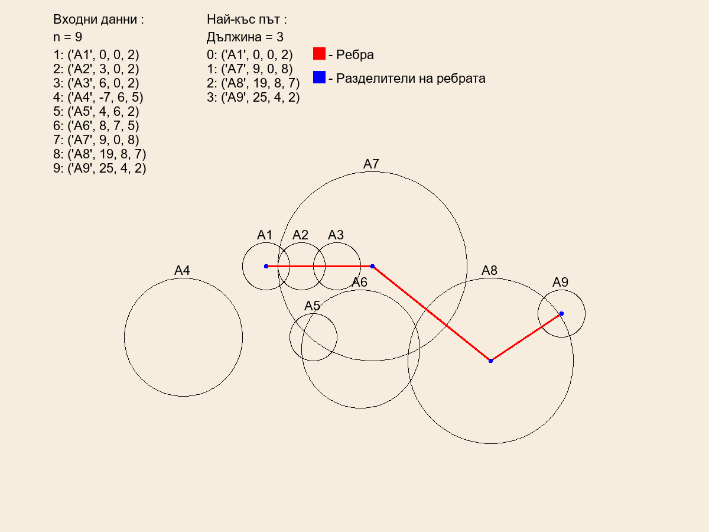

Round Task
Условие:
В равнината са дадени n окръжности: А1, А2, … , Аn.
Разглеждаме неориентиран граф с върхове дадените окръжности, като между две окръжности има ребро, тогава и само тогава, когато окръжностите имат точно две общи точки.
Направете програма round, която намира броя на ребрата в най-късия път от А1 до An
